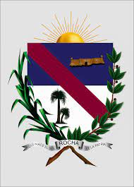
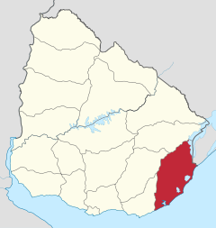

ᴅᴇᴘᴀʀᴛᴀᴍᴇɴᴛᴏ ᴅᴇ ʀᴏᴄʜᴀ
Rocha es uno de los diecinueve departamentos que componen la República Oriental del Uruguay, su capital es la homónima Rocha.
Ubicado en el centro este del país, limitando al norte con Treinta y Tres, al este con la laguna Merín y la República Federativa del Brasil, al sureste con el océano Atlántico y al oeste con Lavalleja y Maldonado. Forma parte de lo que se conoce como penillanura cristalina, en su interior, y de las llanuras orientales, sobre la franja costera.

Coste de la vida en rocha gasto promedio aproximado en dolares.
* Comida en un restaurante barato: 17.46 $. * Comida para 2 personas en un restaurante medio: 52.38 $. * Menu en McDonalds o similar: 8.73 $. * 0.5L de cerveza (bar): 2.62 $. * Café capuccino: 3.20 $. * Refresco de cola de 0.33L (bar): 1.87 $. * Botella de agua de 0.33L (bar): 1.22 $. * Brick de leche de 1L: 0.86 $. * Barra de pan de 500g: 2.33 $. * 1kg de arroz blanco: 1.40 $. * 12 huevos: 2.60 $. * 1kg de queso: 11.99 $. * 1kg de carne roja tipo ternera o similar: 9.25 $. * 1kg de manzana: 2.16 $. * 1kg de plátanos: 2.75 $. * 1kg de patata: 1.69 $. * Botella de agua de 1.5L (mercado): 1.37 $. * Botella de vino de gama media (mercado): 6.81 $. * 0.5L de cerveza local (mercado): 1.94 $. * Paquete de cigarrillos Marlboro: 4.36 $. * 1km de viaje en taxi: 0.72 $. * 1L de gasolina: 1.59 $. * Entrada para el cine: 8.73 $.
Ubicación departamental  |
|
| •Coordenadas | 33°56′00″S 54°00′00″O |
| •Capital | Rocha |
| •Población de capital | 25422.hab |
| •Entidad | Departamento |
| •Intendente | Alejo Umpiérrez |
| •Superficie | 10551 km² (5,98%) |
| •Población total(2018) | Puesto 13º (74079.hab 2.12%) |
| •Gentilicio | Rochense |
Información gubernamental